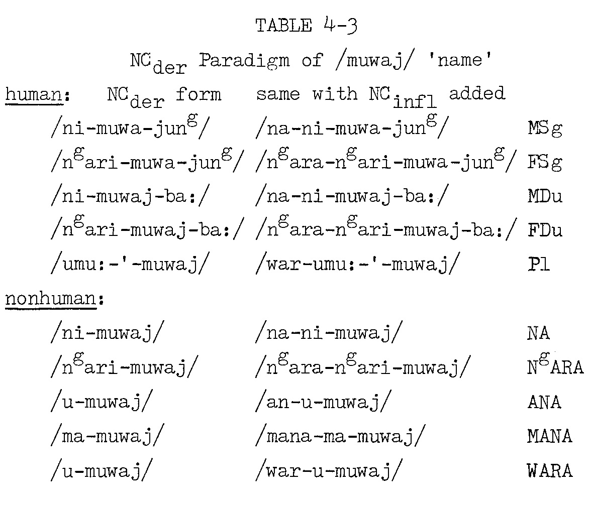

4.9 Uses of NCder prefixes; defective (bound) roots.
The prototypical usage of a NCder prefix (see bottom of Table 4-1 and discussion in §4.7 for the forms) is to take a noun root (of any noun class, or without predetermined noun class) and to convert it into a derived noun of a specific target noun class. For example, the noun /gulmung/ 'belly' happens to be in the MANA noun class. If we wish to create a set of derived nouns which have overtly specified noun classes, we can add the various NCder prefixes. Since /gulmung/ begins with a stop, phonological rule P-1 applies to the derivatives, inserting a meaningless morpheme /-ngu-/. The forms are thus (for nonhuman categories) /ni-ngu-gulmung/ (NA class), /ngarri-ngu-gulmung/ (NgARA), /u-ngu-gulmung/ (ANA or WARA class), and /ma-ngu-gulmung/ (MANA class). Note that the derivative may end up with the same NC as the simple root. In any event, the resulting derived noun can then receive the usual nominal inflections for common nouns (Nc), including case suffixes and NCinfl prefixes. For example, the NA class form may appear as /na-na-ni-ngu-gulmung/ (with continuous NA prefix /na-/), or as /yii- -ni-ngu-gulmung -guy/ ‘to the belly' with Allative-Dative suffix //-wuy// and (thus) with punctual NA prefix /yii-/.
NCder formations are used to make the noun class of the derived noun match that of an independently occurring noun (which may or not appear overtly in the same clause or discourse section). If we take our example with /gulmung/ 'belly', the NCder pattern would be used when we want to specify 'belly of X', where X is some noun. It happens that 'belly' is the root used for roughly globular or convex parts of many objects, such as the roundish fruits and nuts of many plants. The term for the plant (or other object) has a given NC value, and to indicate the 'belly' (e.g., fruit) of that particular object, we put 'belly' in the appropriate NCder form.
Although many details about usage of NCder patterns are
lexical idiosyncracies, we should give a rough outline of the system here. Our
first observation is that NCder forms are most common
to refer to parts of inanimate objects (such as implements), plants, and (to a
lesser extent) animals. Most of the relevant noun roots do not take NC
However, some human body parts are treated as parts of parts (cf. English 'roof of the mouth', 'back of the tongue'), and in this event the more precise term may take NCder form to agree in NC with the noun designating the more inclusive body part.
There are also some noun roots which do take NCder form
even when the whole is a human being (or beings). Such noun roots have more
elaborate NCder paradigms than do the majority of
roots which only have nonhuman derivatives. This is because the human NC
A maximal paradigm is exemplified in Table 4-3, which is based on the noun /muwaj/, whose underived noun class is ANAwu (a subclass of the ANA class). As the cross-references in the dictionary entry will indicate, this root is found now and then in underived form, but most often in NCder form (for human or nonhuman referent).

A few other roots which can have NCder forms may be briefly mentioned, /wubulu/ 'body, torso' is common as /NCder-gubulu/ (see dictionary entry) with nonhumans, and an ex. with human reference has turned up now in MT 25: in my transcription /ngarra-ngari-gubulu-yung/ 'her body (corpse)'. Similar exx. involving root /ngagara/ are cited in the dictionary entry; the root means 'bone(s)' but the human NCder form is used in the sense 'skeleton'. I do not know if /ajulu/ 'skeleton' has similar forms (my data show it in underived form with human reference). However, /mabunu/ 'decomposed body' does take human NCder forms (see entry). Some others which may have human forms are /mawurr/ 'spirit', /-lhariyn-/ 'boss' (different meaning with nonhuman reference), /yinag/ 'head' (found once with NCder referring to dreamtime being), /-mandag-/ 'group, gang' (used in Pl), /wanburg/ 'exact likeness, spitting image', /gadhuwa/ 'young, new', and /mangaj/ 'fat (one)'. There are also a handful of NAdj which take NCder prefix to create a feminine counterpart from an underived stem which is used with masculine sense; these are the patrilineal moiety terms /yirrija/ and /miniguya/ and the stem /ngambara/ 'eldest, elder (e.g., sibling)'. In the cases of the two moiety terms, the regular Pl (for either sex) is not a NCder form, but for /ngambara/ we can get a Pl based specifically on the derived FSg form (see dictionary entries for details).
We have seen that there are differences among types of referent (human, animal, plant, object) regarding applicability of NCder formations to nouns designating parts or other intrinsic features. There are also differences among nouns designating parts or other inalienable features, regarding their own propensity to show up in derived or underived form.
In addition to nouns like /gulmung/ 'belly; spherical or convex part' which occur productively both as simple stems and with NCder, prefixes, there is a set of defective (bound) roots which cannot be used as simple noun stems. If used as nouns, they require NCder prefixes. (Most of them can also be used as compound initials.) They are labeled "Nc/Pref" at the head of lexical entries.
Ideally, in each textual occurrence, a defective root should have a derived NC value based on the lexical NC of an associated referent. I believe that this pattern is at least approximated with some of the bound roots, such as /-lhag-/ 'end, tip' and /-lhawirr-/ 'scraps'. However, we must analyse this point more closely, since many defective roots appear to have an unmarked noun-class value.
This is the case with three bound roots designating entrails: /-lhangaj-/ 'entrails', /-(w)uwanima-/ 'large intestine', and /-(w)ugulhanuyn-/ 'small intestines'. These all have an unmarked MANA form, e.g., /(mana-)ma-dhangayn/, regardless of referent, and are used in this form referring to humans as well. Probably the independent nouns /daan/ and /ngudan/ 'guts, internal organs', both in MANA class, are the relevant influences here. Other defective roots preferring the MANA class include /-dharang-/ and /-waranggay-/ 'spear shaft' and /-ngulha-/ and (presumably) /-ngulyir-/ 'spear blade' (the generic term for 'spear' is MANA class /larda/ , although more specific types of spear show other class values as well); /-wlar-/ 'stem' (applied mainly to a few sedges and similar plants, most of which have MANA class); and /-wiril-/ 'water lily leaf' (about half of the terms for water lily spp. and their parts are in MANA class, see p. 312 of dictionary, section 1.B.xix).
Many defective roots, however, prefer ANA class, either ANAØ or ANAwu subclass. ANAØ is found with words associated with wild honey bees (Trigona spp.) and their products: /-galg-/ 'honey bee', /-ngarag-/ 'honey', etc. (see dictionary entry for the generic term /lagu/ 'honey and honey bees' for further information). ΑΝΑØ is also favoured with /-dhanbarj-/ 'fishtail', because the general term /ngujija/ 'fish' is ANAØ. ANAwu is the unmarked NCder form in these cases: /-ban-/ 'smoke' (cf. ANAwu /ngura/ 'fire'); /-lhaj-/ 'chopped wood, firewood' (cf. 'fire', also ANAwu /rangag/ 'tree, wood'); /-lhawal-/ 'splinter, thorn' (cf. 'wood'); /-ngarg-/ 'shore, beach' (cf. perhaps /lhaa1/ 'country', ANAwu); /-lhangurrg-/ 'disease' (functions as most general term; more specific terms for disease/injury are mostly also ANAwu; see pp. 334-35 of dictionary); /-mala-/ 'sky' and /-malg-/ 'night sky' (a number of other terms for weather and time of day are ANAwu, see p. 326 of dictionary [in section 5.D.i emend "Mana" to "AnaWu" as noun class for /minyngu/ 'night']), and /-lhamig-/ 'taste' (nouns for 'smell' are also ANAwu, though not defective roots).
I know of no bound roots for which WARA is the unmarked NC value. NA is the preferred class in a small number of cases closely associated with a NA referent: /-ngalng-/ 'woomera hook' (cf. /wandag/ and near-synonyms 'woomera', all NA class); /nidhamung/ 'clitoris' may be a frozen NA class NCder form */ni-dhamung/ (root */-lhamung-/) with NC value based on /riig/ 'vagina', cf. synonymous /ni-dhayn/ 'clitoris' derived from /lhaayn/ 'tongue'. NgARA is rare as unmarked NC of derived nouns, but there are one or two terms for parts of dugong (/ngarrugalij/, NgARA class) like /ngarri-mawaru/ which naturally show up in NgARA class form.
Overall, we can say that these "unmarked" NC assignments for bound noun roots are usually not lexically arbitrary. Usually they are either a reflection of the fact that a particular bound root may happen to be prototypically associated with referent nouns of a particular NC, or else that they belong to a semantic domain (e.g., disease/injury) whose members are predominantly in a single noun class.
The nouns which can take NCder forms, including both ordinary and defective (bound) roots, are primarily in these categories:
a) habitat ('nest', 'hive', 'burrow');
b) external parts ('face', 'tip', 'blade', 'stem', etc.);
c) internal parts ('intestine', etc.);
d) bodily substance or secretion ('skin', 'excrement', etc.);
e) entire body ('body', 'corpse', 'skeleton', 'sprout', 'baby');
f) incorporeal attribute ('name', 'spirit');
g) sensory emission ('taste', 'smell', 'image','trace');
h) collectivity ('group', 'multitude').
As we have seen, there are also a handful of nouns functioning much like NAdj ('boss', 'new, young', 'elder') which can occur in NCder form, at least under certain conditions. In the following chapter we will see further exx. of NCder forms with kin terms, both to mark referent gender (with the usual human senses) and to mark nonhuman NC referent on those occasions where kin terms like 'mother' are applied to animals, or even inanimate objects.
It would be interesting to do a complete the semantic extensions of basic body-part terms in NCder forms, particularly as applied to parts of plants and objects. We do not yet have adequate data for such a study. However, we may mention a few basic points (see dictionary entries for more details and textual citations). A basic opposition 'front' / 'back' applied to many objects is made using derived forms of the body parts /yinag/ 'face' and /bira/ 'anus', respectively. For erect objects such as trees, derivatives of /ambal/ 'top of head' are used for 'top' (for 'bottom' we usually have just the NAdv /lhirribala/ 'under, inside').
Some referents use /rulbu/ ‘back, backbone' in the sense 'back' or ‘base' (of object), and in ANAwu form this root can mean 'mainland' (as opposed to 'sea'). A similar term /malayn/ 'backbone' is used in NCder form to mean 'dorsal fin' (of fish), while /anyjabal/ 'armpit' in underived or derived form can be extended to 'pectoral fin'. Derived forms of /ngagara/ 'bone' can mean 'hard part' (e.g., tough membrane), as well as 'skeleton' (already exemplified). From /lhanggu/ 'flesh' we can get NCder forms for 'flesh, meat' of particular animals (but 'flesh' of nut or shellfish is expressed by a special term /-win-/ in its derived forms), /wubulu/ 'body' has straightforward applications to animals, plants, and objects, but can also mean 'true identity as referent' or the like (though this is most clearly seen elsewhere in a compound involving this root). From /bagalang/ 'eye' we can get derivatives meaning 'seed, nut' of certain plants, as in nearby languages, but in Nunggubuyu this usage is somewhat limited due to competition with derivatives of /gulmung/ 'belly'. From /lhaayn/ 'tongue' we get NCder forms meaning 'blade of spear' and 'clitoris' (i.e., tongue of vagina). From /dhalbarr/ 'upper leg' we get the extensions 'hind leg' (of quadruped) and '(tree) branch', either in derived or underived form; /wanja/ 'arm' has derivatives meaning 'wing' and 'sleeve of shirt'. From /marang/ 'fingers, hand' we get a slightly irregular /NCder-ngu-marang/ (/-ngu-/ is usually inserted before stops, not nasals) which can mean, among other things, 'root tuber' (of one type of swamp plant), while forms of /la:n/ 'knee' are used to designate the smaller root corms of certain sedges. It is not clear whether /mala/, a simple noun meaning 'navel', is related in some way to either of two derivative types /NCder-mala/ (listed separately in the dictionary), meaning respectively 'clear sky' (there is also one usage of derivatives of /ngagara/ 'bone' with this extended meaning) and 'thick honey (honeycomb)'.
Clearly a more thorough semantic investigation would be worthwhile. (We would have to consider uses of these roots, or their suppletive replacements, in compounds as well.) However, we should not exaggerate the extent of these human-to-nonhuman body-part extensions and metaphors. As can be seen from the list on pp. 322-23 of the dictionary, there are many terms for parts of plants, objects, and animals which are not special uses of terms also applied to human parts ('gill', 'juice/sap', 'spear shaft', etc.), even though it might have been possible to find a human term which could appropriately have these as secondary meanings.